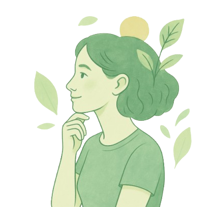

.png)
Na AtivaMente, acreditamos que saúde não deve ser um privilégio, ela é um direito. Criamos este espaço para democratizar o acesso a informações de qualidade sobre bem-estar físico e mental, mesmo para quem não tem dinheiro para academia, nutricionista ou terapeuta.
O AtivaMente nasceu em 2025 como um projeto de conclusão de curso de cinco alunas apaixonadas por saúde, educação e impacto social. O que começou como um trabalho acadêmico, rapidamente se transformou em um movimento digital que inspira pessoas a cuidarem de si com autonomia e leveza.
Oferecer conteúdos acessíveis, práticos e confiáveis para ajudar cada pessoa a desenvolver hábitos saudáveis — física e emocionalmente — com os recursos que já tem em casa.
Construir uma comunidade que se apoie mutuamente na jornada do autocuidado, sem julgamentos e com empatia.
Somos 5 mulheres que acreditam no poder da educação e da empatia. Estudantes, pesquisadoras e praticantes do autocuidado na vida real. Compartilhamos o que aprendemos e vivemos — sem perfeições, mas com muita verdade.
A saúde começa com pequenos passos. Se quiser receber nossos conteúdos semanais ou compartilhar sua história, faça seu cadastro para conteúdos exclusivos cadastre-se aqui! ou siga o @ativamentee2025 no Instagram!